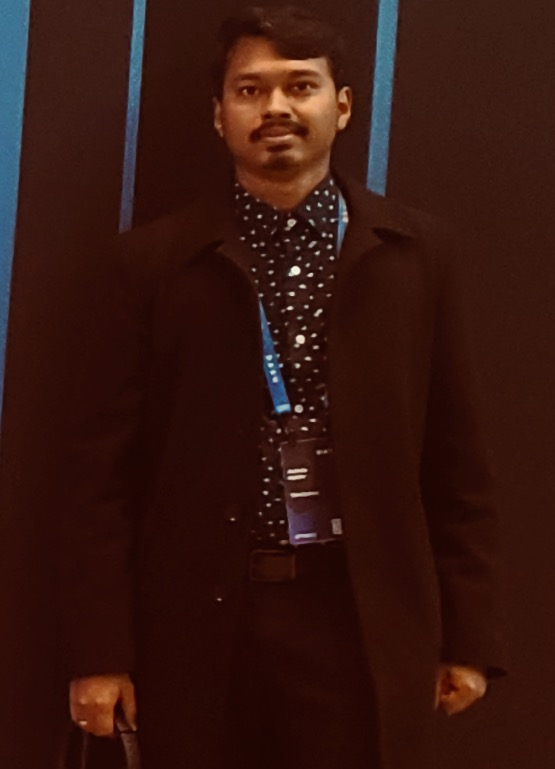

I’m a software engineer and OMSCS student at Georgia Tech, specializing in Interactive Intelligence. My work spans AI-driven systems, trading algorithms, and intelligent interfaces, bridging human-centered design with AI. I’ve built learning agents, market simulators, and secure full-stack platforms. I’m passionate about leveraging my knowledge to solve real-world problems in education, finance, security, and accessibility.

Hi, I’m Aninda, a software engineer and graduate student pursuing an M.S. in Computer Science (Interactive Intelligence) at Georgia Tech. My background combines AI, machine learning, and full-stack development.
I’ve developed learning-based trading strategies, visual reasoning agents, and scalable cloud services. Previously, I worked as a Full-stack Developer at WorkSchool, where I built secure authentication and microservices deployed on AWS. As a Tech Fellow at CodePath, I mentored students in building production-grade applications while leading debugging and code review sessions.
I’m currently exploring how intelligent systems can bridge algorithmic reasoning and human understanding, whether through reinforcement learning, visual analogy, or secure web systems.
I feel driven by curiosity, the desire to understand and build things that feel meaningful. I’ve been fascinated by how people interact with technology, and how thoughtful design can make complex systems accessible. I love those moment of getting stuck and then unstuck, chasing a bug, perfecting a loop, or just watching a model learn something new.
M.S. Computer Science (Interactive Intelligence) — Expected Fall 2026
ProgramTech Fellow — Mentored 30+ students, led debugging sessions, and supported course development (Remote, 2023–2024)
Learn MoreFull-stack Software Developer — Built React components, Node.js services, and AWS-based deployments (2020–2021)
Learn More